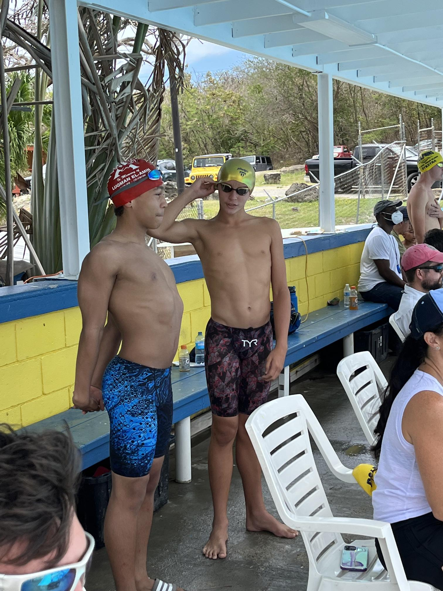
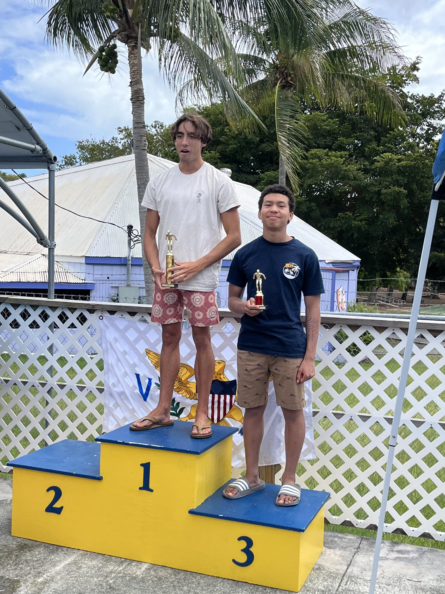
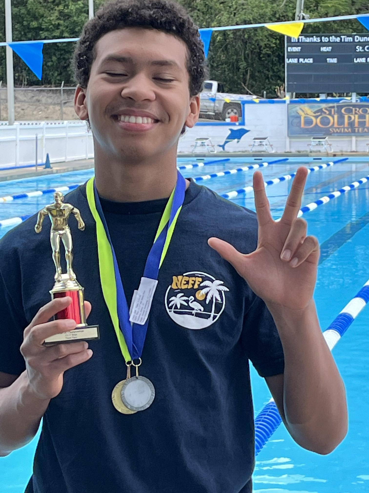
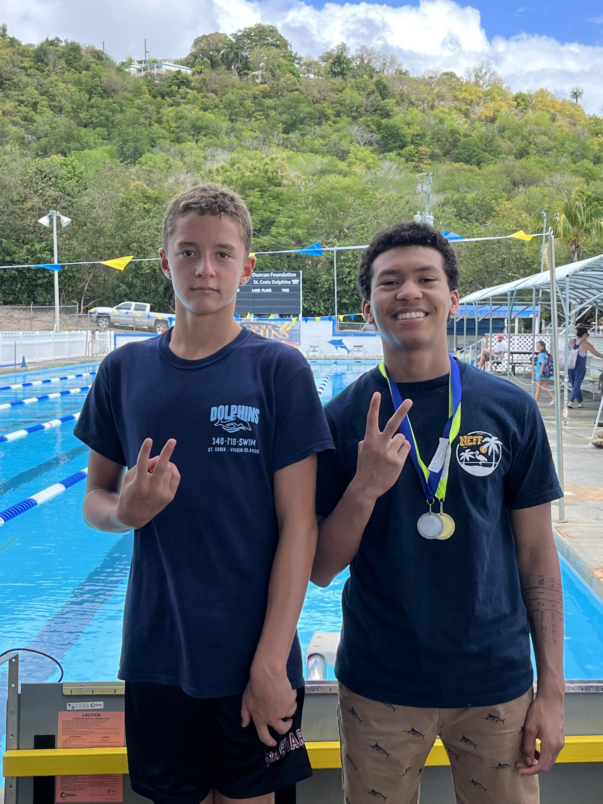

My 1st time meeting Sabir Muhammed, the 1st African American Swimmer to compete at a collegiate level.

Me going to a beach called Magen's Bay when competiting in the U.S.V.I.
Prior to a race, the 200 IM
The time I got 2nd place in the 15-17 yr old age group in the U.SV.I SCC Meet.
Another pose with my medals.
Me and a teamate after the swimmeet